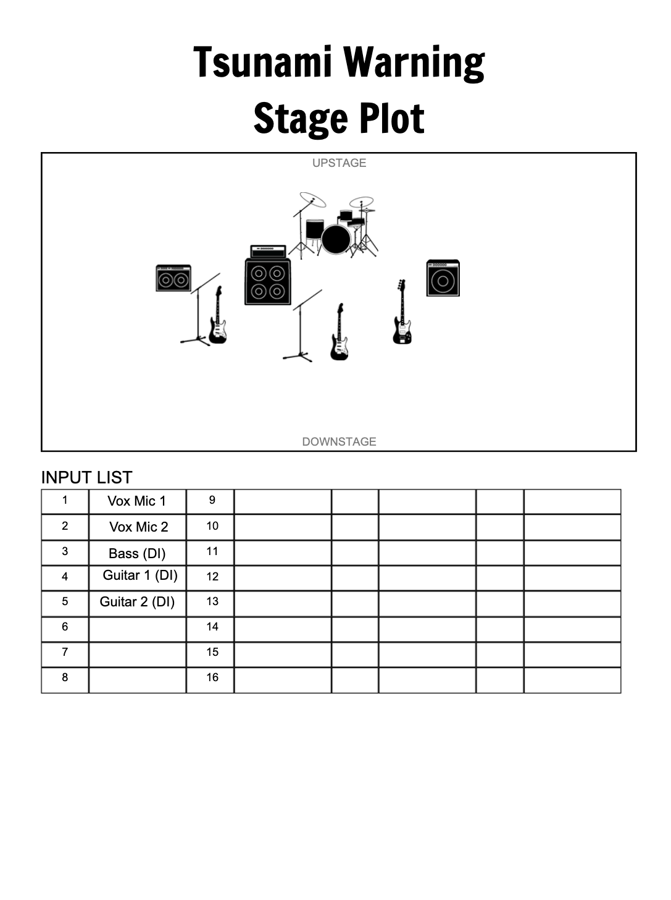

Press kit
everything you need to book us, write about us, or put us on a poster.The short version
Tsunami Warning is an indie rock four-piece from Merced, California, playing around the Central Valley and the Bay Area. Jack and Ziggy started the band in 2022 and stockpiled a huge pile of songs. Hans joined in 2024, and Keiran came aboard on bass in 2025, imported from Mt. Shasta.
Our first full-length, High Tides, came out in 2025. Our original lead guitarist, Grant, left before it was finished, so Hans moved from bass to lead guitar and recorded both parts. In 2026 we followed it with By The Sea, an EP with synths and keys from electronic ambient artist Jellous, and in October we put out the single Saint Luke & Honeybee. We're working on more singles and album number two.
The band
- JackVocals & rhythm guitar. Co-founded the band in 2022.
- ZiggyDrums. Co-founded the band in 2022.
- HansLead guitar & backing vocals. Joined in 2024.
- KeiranBass guitar. Joined in 2025.
Listen
- Saint Luke & HoneybeeSingle · Oct 2026
- By The SeaEP · May 2026
With synths and keys by ambient artist Jellous.
- High TidesAlbum · 2025
Our first full-length.
Photos
Photos: @andreiwithani on Instagram. Tap a photo to open it full size.Stage plot
Here's how we set up on stage, with our input list. Tap it to open it full size, or grab a copy to send to your sound person.


Where we've played
Shows & events
- Concerts we put on ourselves at the Partisan in Merced and The Queen Bean in Modesto
- An Artourage event in Fresno, opening for Green Jelly
- Lots of house shows with local bands
Shared a bill with
Influences
- Mom Jeans
- Mac DeMarco
- Car Seat Headrest
- Foo Fighters
- Modern Baseball
- Queen
- Kitty Craft
- David Bowie
- Cake
- Geese
- Jeff Buckley
- Bob Dylan
- The Beatles
- Good Kid
- Ted Barber
- The Lemon Twigs
- Duster